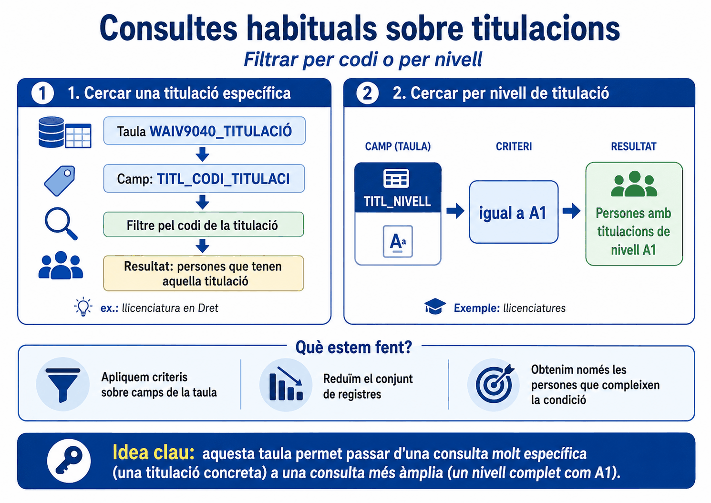
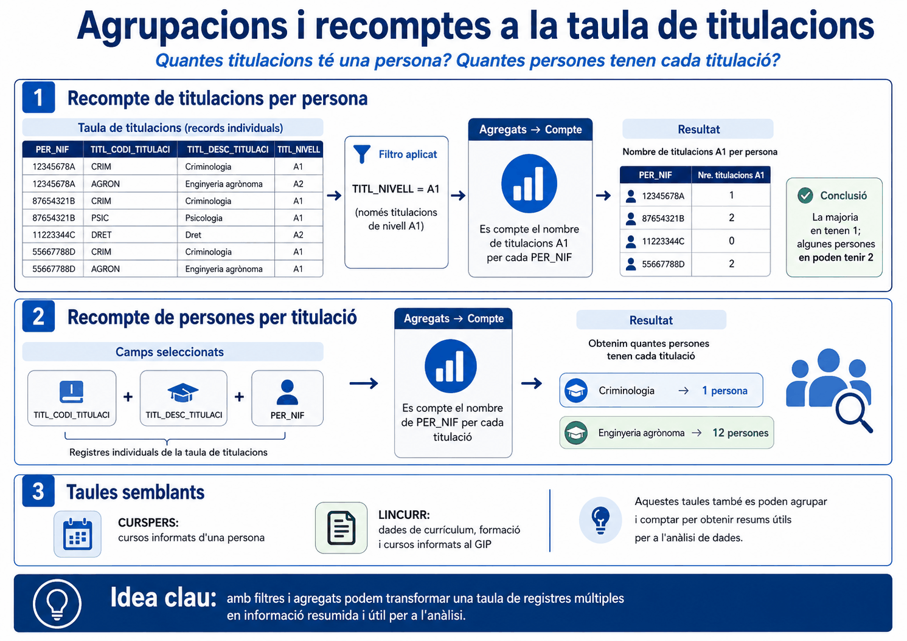
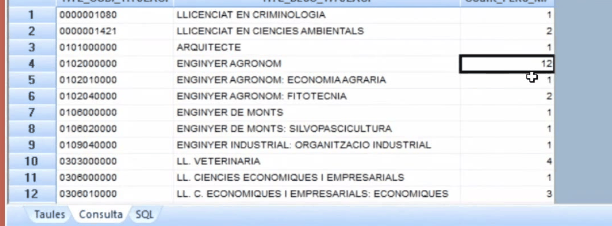
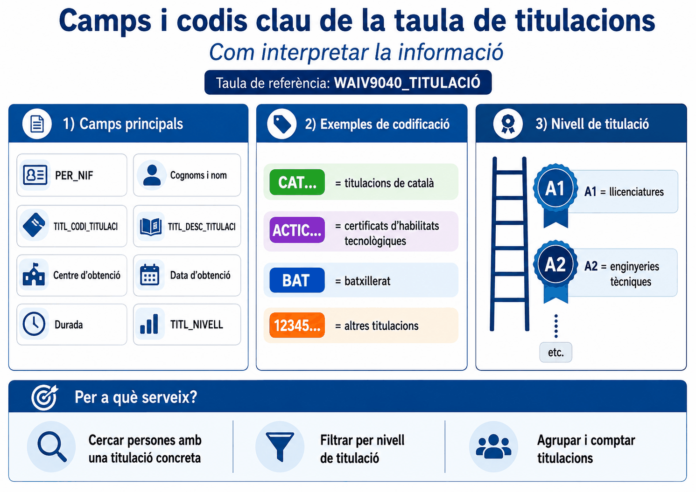

Apartat 1Què conté la taula
- Contingut
- Totes les titulacions reglades que consten informades al GIP: primària, secundària, universitàries -grau, llicenciatura, diplomatura i doctorat-, titulacions d'idiomes reglades i certificats ACTIC de competències digitals.
- De qui
- De tot el personal del vostre àmbit, tant actiu com inactiu.
- Clau
- No en té. És de registres múltiples.
- Vigència
- Dades actuals.
- Càrrega
- Setmanal, a diferència de les taules de persones i llocs.
- Ubicació
- La de la persona ara mateix o, si és inactiva, la darrera que va tenir.
Un títol que s'informi al GIP dilluns pot no aparèixer fins la setmana següent. Si algú us diu que ha registrat una titulació i no la trobeu, abans de buscar-hi cap error mireu quin dia és. Recordeu els dos darrers camps de qualsevol taula: la data i hora de càrrega.
Apartat 2Què vol dir registres múltiples
Aquesta taula no té cap camp únic per a cada registre. La taula de persones tenia el NIF, la de llocs tenia el codi de lloc. Aquí no hi ha res equivalent.
Cada NIF es repeteix tantes vegades com titulacions tingui la persona informades al GIP.
El que veieu
El que hi ha
2 persones i 4 titulacions.
Les dues xifres són correctes i responen preguntes diferents. Si algú us demana "quanta gent titulada tenim" i doneu 4, us heu equivocat.
Abans de comptar res en una taula d'aquestes, contesteu: una fila, què és? Aquí una fila és una titulació d'una persona. No és una persona. Tot el que compteu amb un comptador de files, per tant, són titulacions.
Al costat del codi i la descripció, la taula porta el centre d'obtenció de la titulació, la data en què es va obtenir i, quan hi consta, la durada. Són els camps que permeten respondre preguntes que no van de qui té què, sinó d'on i quan: quanta gent ha obtingut una titulació a partir d'una data, o quantes en venen d'un centre concret.
Els noms exactes dels camps són TITL_CODI_TITULACI i
TITL_DESC_TITULACI, el centre partit en dos
(TITL_CENTRE_OBTE_C i TITL_CENTRE_OBTE_D),
TITL_DATA_OBTENCIO, la durada també partida en dos
(TITL_DURADA_QUAN amb la xifra i
TITL_DURADA_UNIT amb la unitat), TITL_NIVELL
i el grup, TITL_AGRUP_C i TITL_AGRUP_D.
Fixeu-vos que la durada són dos camps: la xifra sola no vol dir res
si no sabeu si són anys o mesos.
Apartat 3Els camps i els codis
| Camp | Conté |
|---|---|
| PERS_NIF | El NIF de la persona. Es repeteix. |
| TITL_CODI_TITULACI | El codi de la titulació. |
| TITL_DESC_TITULACI | La descripció en text. |
| TITL_NIVELL | El nivell. És el camp més útil per filtrar. |
| Centre | On es va obtenir. |
| Data d'obtenció | Quan. |
| Durada | Si consta. |
La codificació té dues formes
El codi de titulació barreja dos sistemes, i convé saber-ho perquè afecta com hi filtreu:
| Comença per | Què és |
|---|---|
| CAT | Titulacions de català. |
| ACTIC | Certificats de competències digitals. |
| BAT | Batxillerat. |
| Números | La resta de titulacions. |
Aquí teniu el cas real de l'operador
Comença per de la unitat 6: filtrar per
CAT us dóna totes les titulacions de català
d'un cop, sense haver d'enumerar cada nivell.
Els nivells
TITL_NIVELL agrupa les titulacions per rang acadèmic, i és el
que fareu servir per a les consultes àmplies:
| Nivell | Correspon a |
|---|---|
| A1 | Llicenciatures. |
| A2 | Enginyeries tècniques. |
| La resta | Consulteu el manual de dades administratives per a la llista completa, o feu una consulta de registres únics sobre el camp. |

TITL i les seves codificacions.
Apartat 4Filtrar per titulació o per nivell
Les dues consultes bàsiques, i la diferència entre elles és l'amplada:
Una titulació concreta
Qui té la llicenciatura en Dret. Filtreu pel codi, com sempre.
Un nivell sencer
Qui té qualsevol llicenciatura. Molt més útil per a estudis de plantilla.
En executar la segona, el llistat es queda només amb les titulacions universitàries de grau superior. Fixeu-vos que el que s'ha reduït són files, i que una persona amb dues llicenciatures hi surt igualment dues vegades.
Apartat 5Comptar en les dues direccions
Aquí és on aquesta taula es fa interessant. Amb els mateixos dos camps es poden respondre dues preguntes oposades, i l'única diferència és quin camp agrupa i quin es compta.
Quantes titulacions té cada persona
- Camps
PERS_NIFiTITL_DESC_TITULACI- Agregat
- Clic dret sobre la titulació → Agregats → Compte
- Agrupa per
- El NIF, que és el camp que queda.
- Resultat
- Una fila per persona amb el nombre de títols que té.
- Per a què
- Detectar qui té més d'una titulació d'un mateix nivell.
Quantes persones tenen cada titulació
- Camps
TITL_CODI_TITULACI,TITL_DESC_TITULACIiPERS_NIF- Agregat
- Clic dret sobre el NIF → Agregats → Compte
- Agrupa per
- El codi i la descripció de la titulació.
- Resultat
- Una fila per titulació amb quanta gent la té.
- Per a què
- Saber de què teniu excedent i de què no. Del material oficial: criminologia, 1 persona; enginyeria agrònoma, 12.
El camp que compteu desapareix; els que queden agrupen. Si compteu la titulació, agrupeu per persona. Si compteu el NIF, agrupeu per titulació. És la mateixa mecànica de la unitat 10 aplicada a una taula on el NIF es repeteix. El contrast del vídeo és bo per veure per a què serveix: de llicenciats en criminologia n'hi surt un, i d'enginyers agrònoms, dotze.
A la segona consulta compteu NIF dins d'un grup de titulació. Si una persona tingués la mateixa titulació registrada dues vegades, un Agregats → Compte la comptaria dos cops. Per estar segurs que compteu persones diferents, l'opció és Distinct Agregats.


Count_PERS_NIF, i és on es veu la
diferència que explica la unitat: hi ha titulacions amb una sola
persona i d'altres amb dotze.
Videotutorial 12 de l'EAPC, minut 4:43.
Apartat 6Les taules germanes
Hi ha més taules que es comporten exactament igual: registres múltiples, un NIF que es repeteix i la mateixa mecànica de recompte.
| Taula | Conté |
|---|---|
| WAIV9190_CURSPERS | Els cursos formatius que té informats una persona. |
| WAIV9090_LINCURR | Línies de currículum: formació i cursos que consten al GIP. |
El vídeo del curs anomena la primera 9010_CURSPERS i la guia
de l'EAPC la llista com a WAIV9190_CURSPERS. Davant del dubte,
el nom bo és el que veieu a l'arbre de taules del vostre origen de dades.
Tot el que heu après aquí s'hi aplica igual. Si domineu aquesta unitat, domineu les tres taules.

Apartat 7Errors freqüents
El que passa
Em surten més titulats que treballadors.
He registrat un títol i no surt.
Volia una llista de persones i em surt gent repetida.
La suma dels nivells no dóna el total de plantilla.
El que passa de veritat
Esteu comptant files, i cada fila és una titulació. Compteu NIF distints.
La càrrega és setmanal. Espereu i comproveu la data de càrrega.
És el comportament normal de la taula. Si voleu una persona per fila, activeu Registres únics amb només els camps de persona.
Ni ha de donar-lo: hi ha gent amb diverses titulacions i gent amb cap.
Apartat 8Exercicis
Els titulats de nivell A1
Reprodueix
Sobre WAIV9040_TITULACIO, filtreu les titulacions de nivell
A1. Mostreu NIF, codi i descripció de la titulació.
Anoteu el nombre de registres.
Comprovació
Aquest número no és el nombre de persones llicenciades: és el nombre de llicenciatures. Reteniu-lo, que a l'exercici següent el compararem.
Titulacions o persones
TrencaAmb el mateix filtre, obteniu ara aquestes tres xifres:
- Un recompte de registres.
- Un recompte de NIF distints.
- El recompte per persona: quantes titulacions A1 té cadascú.
Què hauria d'haver passat
1 i 2 no coincideixen. La diferència és exactament el nombre de persones que tenen més d'una llicenciatura.
3 ho explica: gairebé tothom té un 1 a
la columna de recompte, i les poques files amb 2 són les
que fan que les dues primeres xifres no quadrin.
Aquesta és la comprovació que hauríeu de fer sempre en una taula de registres múltiples abans de donar cap xifra: compto files o compto gent?
De què anem sobrats
Resol
Us demanen, per a un pla de formació, quines titulacions de nivell
A1 són les més freqüents al vostre àmbit i quanta gent té
cadascuna.
Digueu quins camps seleccioneu, sobre quin feu l'agregat i com ordeneu el resultat.
Solució
L'agregat va sobre el NIF, perquè el que voleu comptar són persones. Els dos camps de titulació queden i, per tant, són els que agrupen.
Distinct per assegurar que compteu persones diferents i no registres.
I l'ordenació descendent sobre el recompte posa a dalt el que us han demanat: les més freqüents. És la unitat 5 treballant per vosaltres.
Apartat 9Llista de comprovació
- Dir què conté la taula de titulacions i de quin personal.
- Explicar per què no té clau i què implica.
- Respondre "una fila, què és?" abans de comptar res.
- Recordar que la càrrega és setmanal i què significa.
- Identificar els prefixos
CAT,ACTICiBAT. - Fer servir Comença per per agafar una família sencera de titulacions.
- Filtrar per nivell amb
TITL_NIVELL. - Muntar el recompte de titulacions per persona.
- Muntar el recompte de persones per titulació.
- Explicar la regla: el camp que es compta desapareix i els que queden agrupen.
- Saber quan cal Distinct Agregats en comptes d'Agregats.
- Aplicar-ho tot a les taules de cursos i currículum.
Continuem amb registres múltiples, però afegint-hi el temps. Les taules d'incidències porten data d'inici i data de fi, i això obre la pregunta més difícil del curs: què vol dir exactament que una cosa estava vigent en un període.